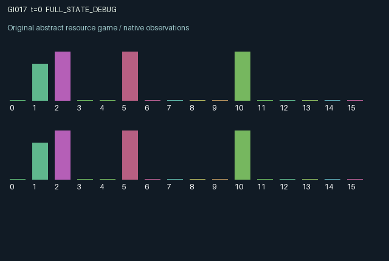

GI017 / LEGACY_ARRAY
astra-d2-00017: relay with persistent local decoding
2 agents5 actions16 observation columns32 original horizonRuntime: PASS
Release verification episode
Untrained uniform legal actions. Actual JAX state sampled along the full original episode; full-state debug camera. No human performance or learning claim.

Run this game
crucibles play --game 17
Start Python locally, then open the address printed by the terminal. Installation, multiplayer, takeover and keyboard controls →
Objective, rewards & ending
Exact task contract
{
"objective": "Accumulate original per-agent rewards under the interaction rules in mechanism.md.",
"natural_termination": "No early terminal; original t >= 32 horizon.",
"exact_transition_and_reward_source": "def raw_step(self, key, state, actions):\n charge_start = jnp.minimum(state[\"charge\"] + 0.08, 1.0)\n sending = (actions == 2) & (state[\"flight_ttl\"] == 0) & (charge_start >= 0.25)\n collision = jnp.all(sending)\n launch_ttl = (\n jnp.array(2, dtype=jnp.int32)\n + collision.astype(jnp.int32)\n + (state[\"congestion\"] > 0.60).astype(jnp.int32)\n )\n arrivals = jnp.roll(state[\"flight_ttl\"] == 1, 1)\n arriving_glyph = jnp.roll(state[\"flight_glyph\"], 1)\n accepting = (actions == 4) & state[\"mail_valid\"]\n decoded = jnp.mod(state[\"mail_glyph\"] + state[\"decoder\"], 3)\n success = accepting & (decoded == state[\"target\"])\n failure = accepting & ~success\n overflow = arrivals & state[\"mail_valid\"] & ~accepting\n target_increment = jax.random.randint(key, (2,), 1, 3, dtype=jnp.int32)\n rotating = (actions == 1) | (actions == 3)\n next_state = {\n \"t\": state[\"t\"] + jnp.array(1, dtype=jnp.int32),\n \"emitter\": jnp.mod(state[\"emitter\"] + (actions == 1).astype(jnp.int32), 3),\n \"decoder\": jnp.mod(state[\"decoder\"] + (actions == 3).astype(jnp.int32), 3),\n \"target\": jnp.where(accepting, jnp.mod(state[\"target\"] + target_increment, 3), state[\"target\"]),\n \"charge\": jnp.clip(charge_start - 0.25 * sending - 0.03 * rotating, 0.0, 1.0),\n \"flight_glyph\": jnp.where(sending, state[\"emitter\"], state[\"flight_glyph\"]),\n \"flight_ttl\": jnp.where(sending, launch_ttl, jnp.maximum(state[\"flight_ttl\"] - 1, 0)).astype(jnp.int32),\n \"mail_glyph\": jnp.where(arrivals, arriving_glyph, state[\"mail_glyph\"]),\n \"mail_valid\": arrivals | (state[\"mail_valid\"] & ~accepting),\n \"congestion\": 0.70 * state[\"congestion\"] + 0.30 * collision.astype(jnp.float32),\n \"last_delivery\": arrivals,\n \"last_success\": success,\n \"last_action\": actions.astype(jnp.int32),\n }\n rewards = (\n 0.70 * success.astype(jnp.float32)\n - 0.25 * failure.astype(jnp.float32)\n - 0.04 * sending.astype(jnp.float32)\n - 0.08 * overflow.astype(jnp.float32)\n + 0.10 * jnp.roll(success.astype(jnp.float32), 1)\n )\n rewards = jnp.clip(rewards, -1.0, 1.0).astype(jnp.float32)\n done_all = next_state[\"t\"] >= 32\n dones = jnp.broadcast_to(done_all, (2,))\n info = {\"done_all\": done_all, \"legal_mask\": self.legal_actions(next_state)}\n return self.observe(next_state), next_state, rewards, dones, info"
}Declared per-step reward bounds: -1.0 to 1.0. Observability: source_defined.
Rules
Original mechanism document (historical status wording retained)
# astra-d2-00017: relay with persistent local decoding
This parentless proposal uses generic store-and-forward communication, finite
buffers, local symbol transformations and congestion. It is not based on a
supplied game or prior proposal. Similarity to communication and queueing models
is acknowledged; no nonisomorphism or novelty certification is asserted.
Both agents are simultaneously senders to the other agent and recipients from
the other agent. Each has a persistent emitter symbol and a private decoder
offset, both in {0, 1, 2}, and a private desired decoded symbol. A launched symbol
is committed to a flight and later enters the partner's one-slot mailbox.
Receiving a new symbol overwrites an unconsumed old one. Acceptance consumes the
previous mailbox item, while a same-transition arrival can refill that mailbox.
Actions are 0 wait, 1 increment the emitter modulo three, 2 launch the current
emitter when charge is at least 0.25 and no outgoing flight exists, 3 increment
the decoder modulo three, and 4 accept the previous mailbox item when present.
Acceptance is successful exactly when (mail symbol + decoder) modulo three
equals the recipient's private target. After either successful or failed
acceptance, an explicit-key random increment of one or two changes that target.
A mailbox item arriving this transition cannot be accepted until a later step.
Launch costs 0.25 charge. Either local rotation costs up to 0.03 charge through
clipping. Charge replenishes by 0.08 per transition, capped at one. A launched
flight gets countdown two, plus one when both agents launch, plus one when
previous congestion exceeds 0.60. Countdown runs on later transitions until
arrival at its old value of one. Congestion retains 0.70 of its prior value and
adds 0.30 on a simultaneous launch. Thus joint launches affect future delays
as well as current deliveries. No launch cancels an existing flight.
The reward is +0.70 for a matching acceptance, -0.25 for a mismatch, -0.04 for a
launch, -0.08 for a mailbox overflow, and +0.10 when the partner succeeds.
It is explicitly clipped to [-1, 1]. A sender affects the partner's available
symbols and their arrival times; recipient pacing affects the consequences of
those deliveries. Cooperative and conflicting pacing incentives are possible.
No learning benefit or performance target is presumed.
Observation columns 0 through 15 are: time/32; own charge; own emitter/2;
own decoder/2; own target/2; own mailbox symbol/2 or -1 when invalid;
own mailbox validity; own most recently launched symbol/2; own outgoing
countdown/4; partner outgoing countdown/4; partner emitter/2; shared congestion;
previous incoming-delivery flag; own previous success flag; own previous
action/4; and partner previous action/4. The partner's private decoder, target,
charge and mailbox contents are hidden. Outgoing symbol state persists after
arrival but its countdown identifies whether a flight is active.
The intended interface is A2/O16/U5 over 32 transitions, preserving the terminal
state and observation. Only syntax parsing is performed by the author.
Engineering validation, structural duplicate review, mechanism eligibility and
learning outcomes are separate, unassessed steps.
Commands
0Wait
1Rotate emitter
2Send current glyph
3Rotate decoder
4Accept and decode mail
Roles & abilities
agent_0 Original legacy agent; see mechanism and source
agent_1 Original legacy agent; see mechanism and source
Observation permissions
Training receives only the original observation rows. Role cameras use declared visibility; debug cameras are explicitly marked. Local benchmark records log debug exposure and role takeover history.
Exact observation layout
[
{
"slice": [
0,
16
],
"visibility": "exact original observe() below",
"source_code": "def observe(self, state):\n obs = jnp.zeros((2, 16), dtype=jnp.float32)\n obs = obs.at[:, 0].set(state[\"t\"] / 32.0)\n obs = obs.at[:, 1].set(state[\"charge\"])\n obs = obs.at[:, 2].set(state[\"emitter\"] / 2.0)\n obs = obs.at[:, 3].set(state[\"decoder\"] / 2.0)\n obs = obs.at[:, 4].set(state[\"target\"] / 2.0)\n obs = obs.at[:, 5].set(jnp.where(state[\"mail_valid\"], state[\"mail_glyph\"] / 2.0, -1.0))\n obs = obs.at[:, 6].set(state[\"mail_valid\"].astype(jnp.float32))\n obs = obs.at[:, 7].set(state[\"flight_glyph\"] / 2.0)\n obs = obs.at[:, 8].set(state[\"flight_ttl\"] / 4.0)\n obs = obs.at[:, 9].set(jnp.roll(state[\"flight_ttl\"], 1) / 4.0)\n obs = obs.at[:, 10].set(jnp.roll(state[\"emitter\"], 1) / 2.0)\n obs = obs.at[:, 11].set(state[\"congestion\"])\n obs = obs.at[:, 12].set(state[\"last_delivery\"].astype(jnp.float32))\n obs = obs.at[:, 13].set(state[\"last_success\"].astype(jnp.float32))\n obs = obs.at[:, 14].set(state[\"last_action\"] / 4.0)\n obs = obs.at[:, 15].set(jnp.roll(state[\"last_action\"], 1) / 4.0)\n return obs"
}
]Entity visibility & attributes
[]
Actual verification & provenance
Per-game execution receipt
{
"game": "gi017",
"status": "PASS",
"verification_revision": 2,
"source_sha256": "dd056d440f7c3f0b9185b0ac13d6b733f28155450d5629e6a5ecc2bcbe01e4e4",
"seed": 20261101,
"runtime": {
"jax": "0.4.38",
"numpy": "1.26.4",
"devices": [
"TFRT_CPU_0"
]
},
"dimensions": {
"num_agents": 2,
"observation_size": 16,
"num_actions": 5,
"max_steps": 32
},
"checks": {
"eager_reset": {
"status": "PASS",
"seconds": 0.6979053020477295
},
"observation_spaces_legal_masks": {
"status": "PASS",
"seconds": 0.12362813949584961
},
"eager_step": {
"status": "PASS",
"seconds": 1.0128400325775146
},
"jit_reset": {
"status": "PASS",
"seconds": 0.25597310066223145
},
"jit_step": {
"status": "PASS",
"seconds": 0.4344050884246826
},
"eager_jit_integer_parity_float_measurement": {
"status": "PASS",
"seconds": 0.001033782958984375
},
"jit_vmap_reset": {
"status": "PASS",
"seconds": 0.4331076145172119
},
"jit_vmap_step": {
"status": "PASS",
"seconds": 0.3327188491821289
},
"outer_autoreset_api": {
"status": "PASS",
"seconds": 0.7722349166870117
},
"full_original_horizon_episode_and_render": {
"status": "PASS",
"seconds": 1.1710941791534424
}
},
"human_scores": null,
"browser_controls": "PENDING",
"failures": [],
"elapsed_seconds": 5.761284112930298,
"float_parity_max_abs": 0.0,
"numerical_parity": "EXACT",
"raw_terminal_absorbing": "NOT_PART_OF_ORIGINAL_LEGACY_CONTRACT",
"terminal_outer_reset": "PASS",
"episode_steps": 32,
"scripted_random_returns": [
0.009999997913837433,
-1.2999999895691872
],
"terminal": true,
"demo_information": "FULL_STATE_DEBUG",
"demo_frames": 33,
"render_roles_checked": 2
}Chromium control verification
{
"game": "gi017",
"status": "PASS",
"human_scores": null,
"engineering": true,
"checks": [
"catalog_selected_and_real_native_reset",
"dom_queue_and_native_step",
"second_participant_ownership_and_native_joint_step",
"all_roles_individually_controllable_no_role_cap",
"explicit_debug_camera",
"release_to_pure_ai_without_reset"
],
"ui_sha256": "15b5861d23b3c42811865c954d5a988280bbfd21cf8e93754be2437a027158c5",
"seconds": 4.641233444213867
}Original identity and file hashes
{
"id": 17,
"key": "gi017",
"title": "astra-d2-00017: relay with persistent local decoding",
"summary": "",
"tags": [],
"family": "legacy_array",
"dimensions": {
"num_agents": 2,
"observation_size": 16,
"num_actions": 5,
"max_steps": 32
},
"source_sha256": "dd056d440f7c3f0b9185b0ac13d6b733f28155450d5629e6a5ecc2bcbe01e4e4",
"manifest_sha256": "22f77f115c1374080d45ad2ce0c771e0fc9da3e0eae36fb0dbeadf31844a1cf3",
"files": [
{
"file": "candidate.py",
"sha256": "dd056d440f7c3f0b9185b0ac13d6b733f28155450d5629e6a5ecc2bcbe01e4e4",
"bytes": 4880,
"origin": "work/exp_2/astra_generation/discovery_v2/initial/candidate_00017/attempt_00/candidate.py"
},
{
"file": "mechanism.md",
"sha256": "23827f2ce5292b16ac5542a6b2c45c4dae9e084bfca7755c1a5b813260cbf81c",
"bytes": 3240,
"origin": "work/exp_2/astra_generation/discovery_v2/initial/candidate_00017/attempt_00/mechanism.md"
}
],
"original_status": "LEGACY_SOURCE",
"original_saved_replay": false,
"release_validation": "PASS",
"human_scores": null,
"browser_validation": "PASS"
}